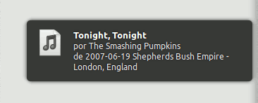
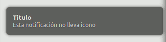
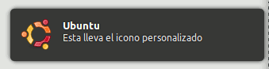
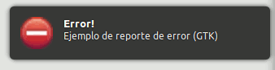

En Ubuntu1 las notificaciones de escritorio son esos cuadros
emergentes que nos proporcionan información sobre algún evento que se está
produciendo en nuestro equipo (llegada de un email, canción que se está
reproduciendo, cambio de volumen, estado de batería, etc). Sustituyen a las
ventanas de dialogo que normalmente requieren la intervención del usuario para
cerrarlas y son más molestas. Además frente a las ventanas de dialogo tienen la
gran ventaja de que son gestionadas a través de una cola. Es decir, que si hay
varias notificaciones para mostrar, no se muestran todas a la vez llenándote
todo el escritorio de pequeñas ventanas, se van mostrando una después de otra.
La notificaciones aparecen en una esquina del escritorio y se desvanecen por si
solas al cabo de unos segundos. Son muy útiles porque llaman nuestra atención y
nos informan sin interrumpir nuestro trabajo.

En Ubuntu esta operación la realiza el paquete Notify OSD que se basa en
las especificaciones del proyecto Galago (freedesktop.org Desktop
Notifications Specification). Este emplea el demonio notify-osd para
enviar las notificaciones a través de D-Bus. Sin embargo muchos paquetes
aún emplean la librería libnotify del proyecto Galago para enviar sus
notificaciones. Además el proyecto Galago tiene un binding para Python
de está librería, que es lo que emplearé en este artículo. En Ubuntu, es el
paquete python-notify y se importa desde Python como pynotify. También
es posible emplear el paquete libnotify-bin que nos proporciona el comando
notify-send que nos permite enviar notificaciones directamente desde la línea
de comandos, algo que puede ser muy útil para scripts en bash.
Ejemplo de utilización de notify-send:
$ notify-send "Notificación" "Esto es un ejemplo de notificación"
que nos mostraría una notificación como esta:

Notificaciones desde Python
Empleando pynotify podemos emplear estas notificaciones en nuestros programas
y scripts Python y se visualizaran igual que las propias del sistema. El
problema que tiene este modulo es que no tiene documentación AFAIK, por lo que
tenemos que guiarnos por algunos ejemplos (los del propio paquete, por
ejemplo) o experimentar con él ayudándonos de las herramientas de introspección
de Python (help(), dir(), inspect).
Para poder emplearlo en mis programas he creado una función que hace uso de las
opciones principales de las notificaciones:
import pynotify
import gtk
def notify(title, msg, icon=None):
"""Send notification icon messages through libnotify.
Parameters:
(str) title -- The notification title
(str) msg -- The message to display into notification
(str / uri) icon -- Type of icon (ok|info|error|warm|ask|sync) or icon file
"""
if not pynotify.is_initted():
pynotify.init(title)
gtk_icon = {'ok':gtk.STOCK_YES, 'info':gtk.STOCK_DIALOG_INFO,
'error':gtk.STOCK_DIALOG_ERROR, 'warm':gtk.STOCK_DIALOG_WARNING,
'ask':gtk.STOCK_DIALOG_QUESTION, 'sync':gtk.STOCK_JUMP_TO}
try:
note = pynotify.Notification(title, msg)
helper = gtk.Button()
gtk_icon = helper.render_icon(gtk_icon[icon], gtk.ICON_SIZE_BUTTON)
note.set_icon_from_pixbuf(gtk_icon)
except KeyError:
note = pynotify.Notification(title, msg, icon)
note.show()
Básicamente llamamos a la función y le decimos que titulo le queremos poner, el
mensaje y el icono que queremos mostrar. En cuanto al icono se puede emplear
ninguno, uno personalizado indicando la ruta al fichero o un icono estándar de
GTK para las opciones más comunes. Veamos lo sencillo de su funcionamiento con
ejemplos:
>>> # Notificación sin icono
... notify("Titulo", "Esta notificación no lleva icono")
>>>

>>> # Notificación con icono personalizado
... notify("Ubuntu", "Esta lleva el icono personalizado",
"/usr/share/icons/gnome/scalable/places/ubuntu-logo.svg")
>>>

>>> # Notificación de información (GTK)
... notify("Información", "Esta emplea el icono de información estándar de GTK", "info")
>>>

>>> # Notificación de error (GTK)
... notify("Error!", "Ejemplo de reporte de error (GTK)", "error")
>>>

Como se puede ver el proceso es realmente sencillo y hacer esto puede aportar a
nuestros programas/scripts ese toque que le faltaba y que tanto contribuye a la
usabilidad de los mismos. Yo por ejemplo, lo empleo en scripts programados para
saber cuando se activan y cuando terminan, sobre todo cuando son procesos
largos. Un ejemplo puede verse en el código de Sincronizar una carpeta local y
una remota a través de FTP: lftp-mirror
El fichero con este código, notify.py se encuentra en
mi repositorio.
Hay comentarios.